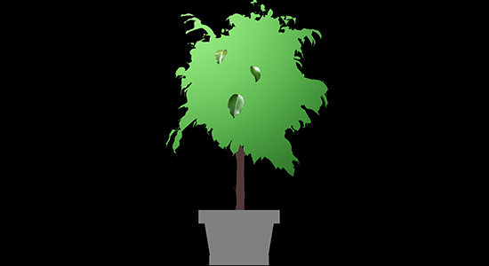
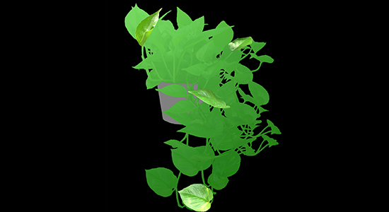

A Chameleon's cage should be filled with live plants and be big enough to mimic a small forest; it should have large plants big enough for the
chameleon to hide inside it from the UVB light and us. The cage should have variours accessories like large sticks for the chameleon to climb onto.
A chameleon's cage should be big - like in the picture above for example - but it can also be smaller (45 x 45 x 60cm for example) when
the chameleon is a juvenile, however it should be swapped to a bigger cage soon after it grows reasonable big. If the cage is not changed while
it grows the chameleon will start showing signs that it needs a bigger cage with its behaviour. It will start crawlling (or try to if the terrarium
is made of glass) on the walls and roof of the cage and will try to get out of the cage.

Weeping Fig
Ficus benjamina
Umblella Plant
Schefflera arboricola

Pothos/Devil's Ivy
Epipremnum aureum
Spider Plant
Chlorophytum comosum
Boston Fern
Nephrolepis exaltata
Money Tree
Pachira aquatica
Wandering Jew
Tradescantia zebrina
Lipstick Plant
Aeschynanthus radicans
Money Tree
Pachira aquatica
China Doll Plant
Radermachera sinica
Satin Pothos
Scindapsus pictus
Umbrella Plant
Schefflera arboricola
Nerve Plant
Fittonia albivenis
Goldfish Plant
Columnea gloriosa